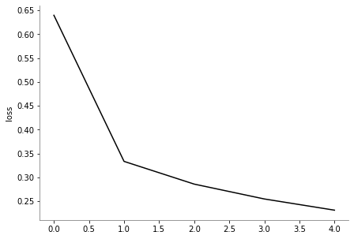

Introducción rápida a Keras para principiantes — 13:53 min
Última modificación: Mayo 4, 2022 | YouTube
Adaptado de: Adaptado de: https://www.tensorflow.org/tutorials/quickstart/beginner

Importación de librerías
[1]:
import os
os.environ["TF_CPP_MIN_LOG_LEVEL"] = "2"
import tensorflow as tf
Carga de datos
[2]:
(x_train, y_train), (x_test, y_test) = tf.keras.datasets.mnist.load_data()
#
# Escalamiento del dataset
#
x_train, x_test = x_train / 255.0, x_test / 255.0
[3]:
x_train.shape, y_train.shape, x_test.shape, y_test.shape,
[3]:
((60000, 28, 28), (60000,), (10000, 28, 28), (10000,))
Especificación del modelo
[4]:
model = tf.keras.models.Sequential(
[
tf.keras.layers.Flatten(input_shape=(28, 28)),
tf.keras.layers.Dense(128, activation="relu"),
tf.keras.layers.Dense(10),
]
)
[5]:
tf.keras.utils.plot_model(
model,
"/tmp/model.png",
show_shapes=True,
)
[5]:

Pronóstico con el modelo sin entrenar
[6]:
predictions = model(x_train[:1]).numpy()
predictions
[6]:
array([[ 0.47714996, -0.8644776 , 0.7500431 , 0.6793618 , -0.23679623,
0.08138776, -0.2058231 , -0.9334694 , 0.48710698, -0.03317261]],
dtype=float32)
[7]:
#
# softmax = tf.exp(logits) / tf.reduce_sum(tf.exp(logits), axis)
#
tf.nn.softmax(predictions).numpy()
[7]:
array([[0.13658264, 0.03570541, 0.17943679, 0.1671918 , 0.0668856 ,
0.09194289, 0.06898967, 0.03332509, 0.13794939, 0.08199082]],
dtype=float32)
[8]:
#
# La suma del vector de salida es ~ 1.0
#
sum(tf.nn.softmax(predictions).numpy()[0])
[8]:
1.0000001080334187
Función de pérdida
[9]:
#
# Esta función toma un vector de logits y un indice True y retorna el valor de
# la pérdida de entropía cruzada
#
loss_fn = tf.keras.losses.SparseCategoricalCrossentropy(
from_logits=True,
)
[10]:
loss_fn(
y_train[:1],
predictions, # Predictions fue calculado en la celda [6]
).numpy()
[10]:
2.3865876
Compilación del modelo
[11]:
model.compile(
optimizer=tf.optimizers.SGD(
learning_rate=0.01,
momentum=0.0,
),
loss=loss_fn,
metrics=["accuracy"],
)
Entrenamiento del modelo
[12]:
history = model.fit(
x_train,
y_train,
epochs=5,
)
Epoch 1/5
1875/1875 [==============================] - 13s 6ms/step - loss: 0.6396 - accuracy: 0.8391
Epoch 2/5
1875/1875 [==============================] - 12s 6ms/step - loss: 0.3337 - accuracy: 0.9063
Epoch 3/5
1875/1875 [==============================] - 12s 6ms/step - loss: 0.2861 - accuracy: 0.9196
Epoch 4/5
1875/1875 [==============================] - 12s 6ms/step - loss: 0.2550 - accuracy: 0.9285
Epoch 5/5
1875/1875 [==============================] - 12s 7ms/step - loss: 0.2315 - accuracy: 0.9354
[13]:
import matplotlib.pyplot as plt
plt.figure(figsize=(7, 5))
plt.plot(history.history["loss"], "k-")
plt.ylabel("loss")
plt.gca().spines["left"].set_color("gray")
plt.gca().spines["bottom"].set_color("gray")
plt.gca().spines["top"].set_visible(False)
plt.gca().spines["right"].set_visible(False)
plt.show()

Evaluación
[14]:
model.evaluate(
x_test,
y_test,
verbose=2,
)
313/313 - 2s - loss: 0.2142 - accuracy: 0.9403 - 2s/epoch - 5ms/step
[14]:
[0.21415063738822937, 0.9402999877929688]
Generación de un nuevo modelo
[15]:
probability_model = tf.keras.Sequential(
[
model,
tf.keras.layers.Softmax(),
]
)
Uso del modelo
[16]:
probability_model(
x_test[:5],
)
[16]:
<tf.Tensor: shape=(5, 10), dtype=float32, numpy=
array([[1.2233661e-04, 5.1629485e-07, 3.3434684e-04, 1.2950627e-03,
2.0098219e-06, 9.4352014e-05, 2.3028504e-08, 9.9750781e-01,
3.2968463e-05, 6.1050412e-04],
[9.5946010e-04, 5.5734374e-05, 9.7443330e-01, 7.9161162e-03,
5.5581626e-08, 4.1780234e-03, 1.1130940e-02, 6.3259469e-09,
1.3263094e-03, 5.0014329e-08],
[6.6477653e-05, 9.6917033e-01, 1.2771892e-02, 5.2055223e-03,
4.6557718e-04, 1.1868986e-03, 1.7830061e-03, 4.7653099e-03,
3.4761664e-03, 1.1089091e-03],
[9.9915826e-01, 2.5097746e-09, 2.1159019e-04, 2.4076244e-05,
1.0019486e-07, 4.7437951e-04, 3.6667730e-05, 3.8384635e-05,
2.5984185e-05, 3.0618197e-05],
[2.8520491e-04, 4.7726408e-06, 3.0648094e-03, 1.6724443e-04,
9.6385598e-01, 5.4462272e-04, 1.9077833e-03, 3.1877500e-03,
2.3713184e-03, 2.4610531e-02]], dtype=float32)>
Resumen
[17]:
#
# Carga los datos
#
(x_train, y_train), (x_test, y_test) = tf.keras.datasets.mnist.load_data()
#
# Escala los datos al rango [0, 1]
#
x_train, x_test = x_train / 255.0, x_test / 255.0
#
# Construye el modelo como una secuencia de capas
#
model = tf.keras.models.Sequential(
[
tf.keras.layers.Flatten(input_shape=(28, 28)),
tf.keras.layers.Dense(128, activation="relu"),
tf.keras.layers.Dense(10),
]
)
#
# Define la función de pérdida
#
loss_fn = tf.keras.losses.SparseCategoricalCrossentropy(
from_logits=True,
)
#
# Compila y entrena el modelo
#
model.compile(
optimizer=tf.optimizers.SGD(
learning_rate=0.01,
momentum=0.0,
),
loss=loss_fn,
metrics=["accuracy"],
)
model.fit(
x_train,
y_train,
epochs=5,
)
#
# Construye el modelo final
probability_model = tf.keras.Sequential(
[
model,
tf.keras.layers.Softmax(),
]
)
Epoch 1/5
1875/1875 [==============================] - 13s 6ms/step - loss: 0.6491 - accuracy: 0.8362
Epoch 2/5
1875/1875 [==============================] - 11s 6ms/step - loss: 0.3356 - accuracy: 0.9063
Epoch 3/5
1875/1875 [==============================] - 13s 7ms/step - loss: 0.2877 - accuracy: 0.9187
Epoch 4/5
1875/1875 [==============================] - 13s 7ms/step - loss: 0.2575 - accuracy: 0.9271
Epoch 5/5
1875/1875 [==============================] - 14s 7ms/step - loss: 0.2342 - accuracy: 0.9337